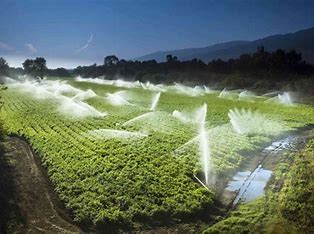

El agua en la agricultura
El agua es un recurso fundamental en la agricultura, ya que es esencial para el crecimiento de los cultivos y la producción de alimentos. A continuación se exploran los aspectos más relevantes del agua en la agricultura.
Importancia del agua en la agricultura
El agua desempeñaroles cruciales en la agricultura, entre los cuales se destacan:
- Fotosíntesis: El agua es esencial para la fotosíntesis, el proceso mediante el cual las plantas producen su alimento.
- Transpiración: El agua ayuda a regular la temperatura de las plantas y facilita la absorción de nutrientes.
- Crecimiento de las raíces: Las raíces necesitan agua para crecer y absorber los minerales del suelo.

Uso del Agua en la agricultura
El agua se utiliza principalmente en:
- Riego: En áreas con precipitaciones insuficientes, el riego es necesario para mantener la producción agrícola.
- Irrigación de cultivos: En regiones áridas o semiáridas, el riego es indispensable para cultivar alimentos.
Desafíos en el Uso del Agua en la Agricultura
El uso del agua enfrenta varios problemas, tales como:
- Escasez de agua: Las sequías, la sobreexplotación de recursos hídricos y el cambio climático agravan la falta de agua en muchas regiones.
- Contaminación del agua: Los productos químicos usados en la agricultura pueden contaminar las fuentes de agua, afectando la calidad de la misma.
- Competencia por el agua: Con el crecimiento de la población y la urbanización, la demanda de agua aumenta, lo que genera conflictos sobre su distribución.
A continuación un video sobre el agua en la agricultura: